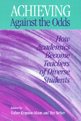

Compelling essays on non-traditional students written by non-traditional faculty
Compelling essays on non-traditional students written by non-traditional faculty


 Compelling essays on non-traditional students written by non-traditional faculty
Compelling essays on non-traditional students written by non-traditional faculty

|  |
Achieving Against the OddsHow Academics Become Teachers of Diverse Studentsedited by Esther Kingston-Mann and Tim Sieberpaper EAN: 978-1-56639-851-0 (ISBN: 1-56639-851-7) |
"Well written and succinct, these essays will appeal to a broad audience; although they target university-level teaching exclusively, teachers at other levels will find plenty they can appreciate."
—Library Journal
"High school was a like a penance imposed for some unknown sin. Everything I ever learned that was important to me was learned outside of school. So I never thought to associate schools with learning."
—Amy, UMass Boston student
Today's diverse and financially burdened students enter higher education eager to succeed at institutions originally designed for culturally homogenous and predominantly white middle-class populations. They are expected to learn from faculty trained primarily as researchers. Unsurprisingly, student dropout and faculty burnout rates are high, leading some conservatives to demand that higher education purge itself of "unqualified" students and teachers. But, as Achieving Against The Odds demonstrates, new and better solutions emerge once we assume that both faculty and students still possess a mutual potential for learning when they meet in the college classroom.
This collection—drawing on the experiences of faculty at the University of Massachusetts-Boston—documents a complex and challenging process of pedagogical transformation. The contributors come from a wide range of disciplines: American studies, anthropology, Asian American studies, English, ESL, history, language, political science, psychology, sociology, and theology. Like their students, they bring a variety of backgrounds into the classroom—as people of color, women, gays, working class people, and "foreigners" of one sort or another. Together they have engaged in an exciting struggle to devise pedagogies which respond to the needs and life experiences of their students and to draw each of them into a dialogue with the content and methodology of their disciplines. Courageously airing their own mistakes and weaknesses alongside their breakthroughs, they illuminate for the reader a process of teaching transformation by which discipline-trained scholars discover how to promote the learning of diverse students.
As one reads their essays, one is struck by how much these faculty have benefited from the insights they have gleaned from colleagues as well as students. Through argument and examples, personal revelation and references to authority, they draw the reader into their community. This is a book to inspire and enlighten everyone interested in making higher education more truly democratic, inclusive, and intellectually challenging for today's students.
Excerpt available at www.temple.edu/tempress
"The contributors to this volume have a wonderful ability to reflect candidly and constructively on their classroom experiences, to empathize effectively with their students, and to offer accounts of difficult classroom interactions without feeling compelled to have all the answers. A special strength of this book is the specificity and richness of the pedagogical strategies the authors share. Teachers in a broad variety of disciplines will find food for thought in these thoughtful essays."
—Paula Rothenberg, Director, The New Jersey Project on Inclusive Scholarship, Curriculum, and Teaching, William Paterson University
"This book confirms that there is nothing richer and more authentic in the acedemy than theory and knowledge grounded in unrelenting practice. The reflective practice promoted here could not have been achieved unless educators embraced learning as a reciprocal process for both teachers and students, who our society had not prepared to struggle with the realities of race, class and gender. Without such reciprocity, the opportunities afforded by diversity would have been squandered.
"It is a refreshing irony that the great light and insights revealed occurred in a public, urban university, the learning home of non-elites. It is not an accident. It is the consequence of educators who dared to act to make the classroom a microcosm of the kind of multi-cultural, multi-racial society that we should seek to create in America. Achieving Against the Odds is must reading for university teachers committed to pedagogy that is truly transformative."
—Hubie Jones, Dean Emeritus, School of Social Work, Boston University
"Achieving Against the Odds should prove to be enlightening and rewarding reading.... What I especially enjoyed was the writers' honesty about hard situations, their admission that sometimes they fail and that sometimes they are just plain stumped....As we learn to respond to the many new challenges and learning styles in our classrooms, testimonials and essays like these are sorely needed and greatly appreciated."
—Deborah Straw, Community College Week
"This collection of compelling essays on nontraditional students written by nontraditional faculty, documents a complex and challenging process of pedagogical transformation."
—New York Review of Books
"Although the book is not intended as a handbook of instructional techniques, many chapters demonstrate the power of teaching methods readily adaptable to the task of transforming instructors' understandings of who their students are and how they learn."
—Anthropology and Education Quarterly
"Each essay is a tale of struggle, introspection and risk-taking. And each is a success story.... Faculty and administrators will be encouraged by this book as they feel their admiration grow for the determination and persistence of its authors."
—Connection: New England's Journal of Higher Education
Foreword – Elizabeth Kamarck Minnich
Acknowledgments
Introduction: Achieving Against the Odds – Esther Kingston-Mann and Tim Sieber
1. Coming Out and Leading Out: Pedagogy Beyond the Closet – Kathleen M. Sands
2. Three Steps Forward, One Step Back: Dilemmas of Upward Mobility – Esther Kingston-Mann
3. Learning to Listen to Students and Oneself – Tim Sieber
4. Language and Cultural Capital: Reflections of a "Junior" Professor – Reyes Coll-Tellechea
5. Racial Problems in Society and in the Classroom – Castellano B. Turner
6. Teaching (as) Composing – Vivian Zamel
7. Teaching, Tenure, and Institutional Transformation: Reflections on Race, Culture, and Resilience at an Urban Public University – Peter Nien-Chu Kiang
8.Teaching American Dreams/American Realities: Students� Lives and Faculty Agendas – Lois Rudnick
9. Teaching, Learning, and Judging: Some Reflections on the University and Political Legitimacy – Winston E. Langley
10. Gender Trouble in the Gender Course: Managing and Mismanaging Conflict in the Classroom – Estelle Disch
11. Odd Man Out – Pancho Savery
About the Contributors
Index
Esther Kingston-Mann is Professor of History and American Studies, and directs the Center for the Improvement of Teaching at the University of Massachusetts, Boston.
Tim Sieber is Associate Professor of Anthropology at the same institution.
Education
Race and Ethnicity
Gender Studies
The New Academy, edited by Elizabeth Kamarck Minnich.
The accelerated growth of interdisciplinary programs is just one indicator of the radical changes that have occurred within the academy during the past thirty years. Women's studies, peace studies, disability studies, environmental studies, queer studies, postcolonial studies, gender studies, ethnic studies (together and separately), cultural studies, and many more, have become established sites of inquiry. Much is owed to past generations of writers and thinkers whose voices were silenced, only now to be welcomed by academia. Considering this shifting of borders and expansion of domains, books in The New Academy, a series edited by Elizabeth Kamarck Minnich, explore conceptual tools developed by recent scholarship to extend, reconfigure, and comment upon intersections and divisions among established and emerging fields of academic study. Moving beyond rhetoric and jargon, the series engages the growing readership for critical and creative, inclusive and reconciling scholarship.
© 2015 Temple University. All Rights Reserved. This page: http://www.temple.edu/tempress/titles/1526_reg.html.